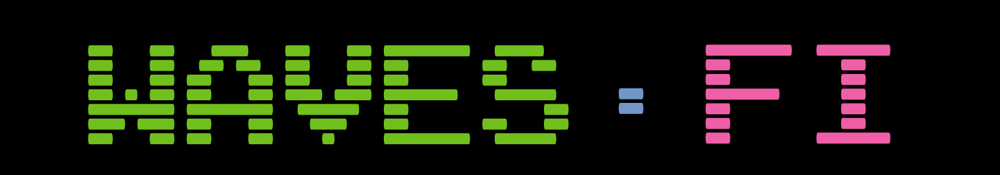

Roadmap
- Liquidity Staking Period (DAO bootstrapping)
- During this period DAO governance token will be send out to the lesssors instead of WAVES.
- The amount of governance token each lessor receives is proportional to the amount of total WAVES staked.
- Once 20k WAVES have been generated by the node, these WAVES will directly fund the
initial DAO code development.
- Code review, DAO deployment and website update (to enable proposals and voting).
- Once the Waves.FI node balance reaches 30k WAVES all WAVES will be transferred into the DAO.
- Governance token distribution has finnished. That’s it!
- Age of the DAO
- DAO and its funds are completely governed by DAO token holders.
Proposal Ideas
- To be decided upon by the DAO
- Development of Market Maker Bots for Waves.Exchange in order to increase liquidity
and earn rewards for the DAO.
- Development of cross-chain yield aggregating smart contracts for the Waves.Fi node.